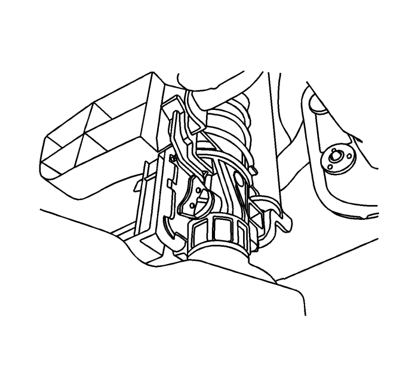
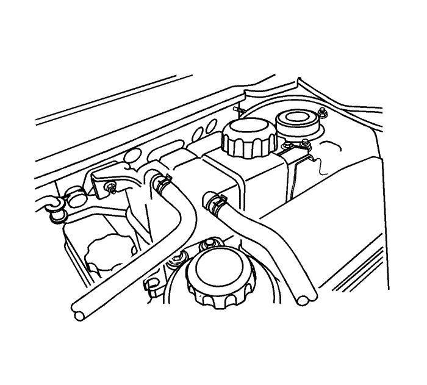

Advertencia : Para evitar quemaduras, no abra la tapa del radiador ni la del depósito de expansión mientras que el motor esté caliente. El sistema de refrigeración liberará líquido extremadamente caliente y vapor bajo presión si se abren la tapa del radiador o del depósito de expansión mientras que el motor y el radiador todavía están calientes.
- Coloque un recipiente bajo el vehículo para recoger el refrigerante que se vaya a extraer.
- Retire el tapón del vaso de expansión.
- Quite el tapón de drenaje.
Nota: Deseche el refrigerante utilizado a un depósito de almacenamiento de refrigerante usado para que lo recojan junto con el aceite usado. No eche nunca el refrigerante usado por el desagüe.
- Recoja el líquido que salga en una bandeja de drenaje.
- Elimine todos los lodos y suciedad del interior de la cámara de compensación. Consultar Sustitución del vaso de expansión del radiador : Diesel → Motores de gasolina .
- Ponga el tapón de drenaje.
- Añada agua limpia al depósito de compensación.
- Llene el vaso lentamente de manera que el manguito superior del vaso quede por encima de la línea del agua. Esto permite la salida del aire que haya en el interior del sistema de refrigeración.
- Arranque el motor.
- Tenga en marcha el motor hasta que se abra el termostato. Se puede saber si el termostato está abierto tocando los manguitos del radiador para ver si están calientes.
- Pare el motor.

- Repita los pasos 1 a 9 hasta que el agua que salga esté limpia y no contenga ni refrigerante ni óxido.
Nota: No utilice nunca una mezcla de anticongelante con una concentración mayor del 60% de éste y 40% de agua. El punto de congelación de la solución aumenta por encima de esta concentración.
- Rellene el sistema de refrigeración por el depósito de compensación con una mezcla de DEX-COOL y agua. La mezcla debe tener, al menos, un 50% de anticongelante, pero nunca más de un 60% del mismo.
- Llene el vaso de compensación hasta la marca de MAX en el exterior del vaso.